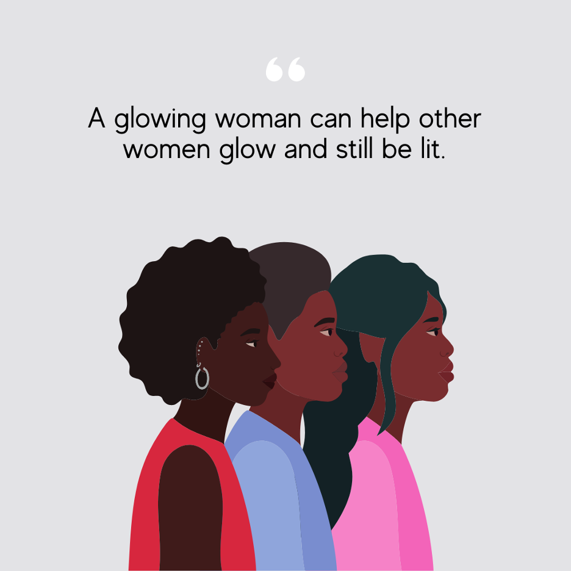

In celebration of International Women’s Day 2025, we honor the resilience and determination of African American women. IAWH will begin with a financial independence workshop, followed by a discussion about holistic wellness. Moreover, as the fastest-growing group of entrepreneurs, we continue to break down barriers and forge our paths to success as a force in economic and community development. Black women have historically led transformative change in the United States. The policies introduced during Donald Trump’s presidency and their potential return could significantly affect our community. Here are five key areas where these policies impact Black women and how we can prepare to address them:
- Changes to Reproductive Health and Rights.
With Black women facing disproportionately high rates of maternal mortality, we must unapologetically advocate for our health rights. “Trump intends to use his power to entrench further the harmful coverage bans that have for decades created often insurmountable barriers to abortion for many women across the country, disproportionately impacting people with low incomes, people of color, young people, immigrants, and people who live in rural communities.” (National Women’s Law Center).
“This is a moment that calls for active engagement. Take a deep breath and ask: What kind of country do we want to live in? And then fight for it.”
~ Fatima Goss Graves, President and CEO, National Women’s Law Center
- Diversity, Equity, and Inclusion (DEI) Swings.
Recent initiatives threaten to roll back progress in workplace equity, particularly for those who face systemic barriers as "double minorities." As recently noted in Forbes magazine (an organization that has not rescinded or changed its stance on DEI), this administration has “Rescinded years of practices in the federal government and ordered that federal DEI workers be placed on leave.” For Black women, who often experience a lot of systemic workplace barriers and appear in the workforce as "double minorities" due to their race and gender, such rollbacks could hamper the pathways for equity at work, leaving Black women vulnerable to discrimination with fewer institutional mechanisms for recourse.”
It is crucial to recognize our awareness of the number of companies that quickly pivoted and launched their own “me too” (lowercase pun intended), revealing much more than just a decision; it exposes their philosophies and beliefs regarding the issues they claimed to support. The list of companies that rolled back their DEI policies includes Uber, Goldman Sachs, Google, Target, Amazon, McDonald’s, and Lowe’s. We must remain vigilant and unite our voices and resources to demand fair treatment and equitable opportunities.
- Economic Policies Impacting Entrepreneurship.
Sixty-one percent of Black women view entrepreneurship as essential for wealth building, which is significantly higher than the general U.S. population. Despite challenges such as harmful tariff strategies, we will seize opportunities in beauty, retail, and healthcare by remaining informed, engaging with industry organizations, and building trustworthy partnerships.
- Healthcare and Chronic Health Disparities.
Navigating chronic health issues demands strong advocacy for quality care. We empower our community through innovative health solutions and educational initiatives. Please stay connected with health resources like IAWH, which offers evidence-based programs, despite this administration's efforts to limit our access to public health research and science.
- Economic Disparities.
Currently, Black women earn only 64 cents for every dollar earned by white, non-Hispanic men. This disparity calls us to collaborate to build wealth, drawing strength from our ancestors to demand what we deserve.
Actions for Financial Wellness and Health Empowerment
Did you know that, according to a 2021 study by Prudential (an organization that has not rescinded or changed its stance on DEI), 52% of Black women feel less confident in their investing knowledge compared to 37% of white women? IAWH aims to support and empower more women in this area. One way is to leverage resources such as online courses, podcasts, and tailored financial literacy programs.
Invest in Financial Education
Join us for IAWH’s Financial Wellness Workshop featuring a dynamic mother-daughter duo who will share essential concepts to support us during challenging times. Economic independence unlocks better access to healthcare and enhances opportunities for our families and communities, even amid systemic challenges.
Note: IAWH understands that rising daily costs are affecting everyone’s budgets. To encourage your participation, we’ve set what we hope is an accessible price for this event. Your support helps us provide valuable content for you and our community. We appreciate your consideration and look forward to welcoming you on 3/20.
- Wellness education is essential for our survival and flourishing. Health equity is a pressing concern, with Black women disproportionately impacted by maternal mortality and chronic illnesses. Check out IAWH’s recent blogs and share other interesting news resources. Share with women in your “community”—be your own journalist and spread the word via social media, start your blog or podcast…you got this!
Entrepreneurship
Create that vision, launch that business, and connect with like-minded individuals. With a historic 68% growth in Black women-led businesses over the past decade, let’s continue to redefine success. We excel in business, building relationships, and inventing solutions.
Wealth Accumulation
The median wealth gap between single Black women ($1,700) and white women ($107,000) emphasizes a critical need for strategic wealth-building. Focus on financial literacy, entrepreneurship, real estate, stock investments, and support for Black-owned businesses – shop where you are wanted—check out curated lists like those compiled by:
· Addie Rawr – a black-owned and focused website supports the health of the mind, body, and spirit through unique products that nurture our community.
· https://www.afrobizworld.com/Black-Owned-Marketplace/
· Good Housekeeping 100+ Black-Owned Businesses to Support Today and Always
· NBCNews.com’s 201+ Black-owned businesses to shop year-round
· AfroBizWorld – a Black-Owned Marketplace
· Janine’s favorite coffee shop (okay, I purchase from Kahawa – I love, love, love their coffee and their entrepreneurial story).
IAWH does not endorse any links or products mentioned in this article.
Establish Multiple Income Streams
Consider side hustles, real estate, and stock market investments, but recognize that not everyone has the same financial circumstances. Reducing debt is also essential for achieving financial freedom, so it may be wiser to focus on that before pursuing investments. Aim to connect with a professional financial advisor or planner soon.
Do you have a favorite black-owned coffee or tea to share? Tell us about what you’re sipping at advancingherhealth@gmail.com, and we’ll hold a drawing for a winning prize: a coffee (or tea) mug from Kahawa (of course). And no, they don’t sponsor us – just sharing from the heart and coffee palate.
“We possess the ancestral power to transform our financial and wellness journeys. Let’s rise boldly, support one another, and create the future we deserve.” Peace, Janine
Janine Sands Payne, MPH
Co-Executive Director, IAWH
This article first appeared on the IAWH Health blog on March 12, 2025 and is preserved here as part of the IAWH Health Journal archive. Information reflects what was known at the time of publication. This article is for general education and is not medical advice.